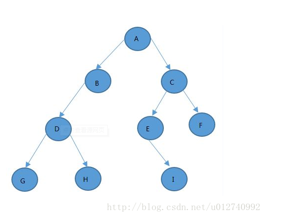
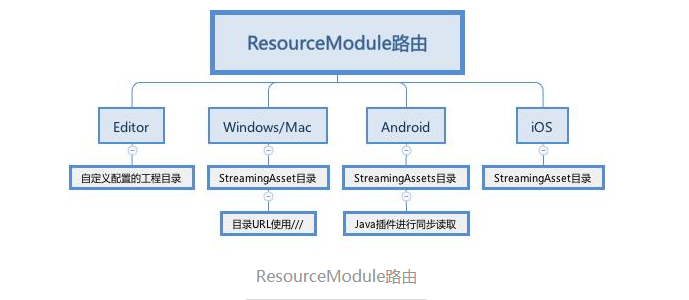
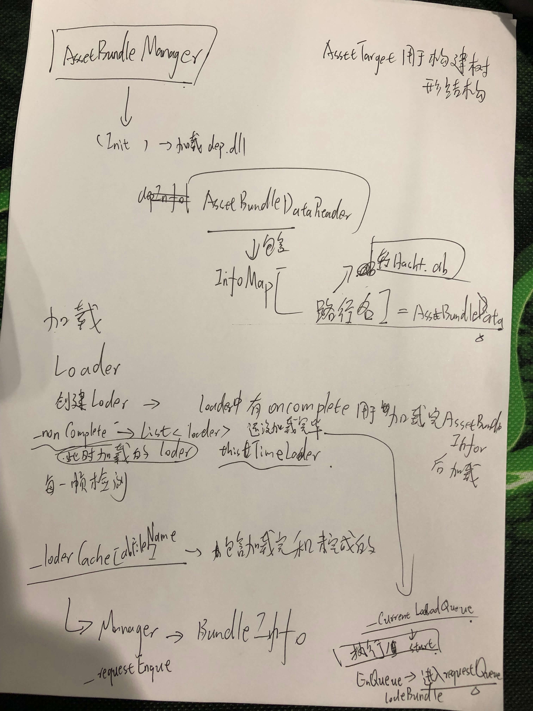
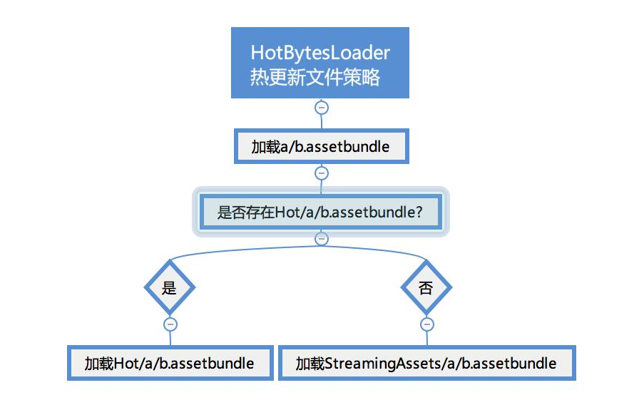

上一章介绍了主要的AssetBundle的基础知识，然而对于一个游戏的热更新而言，Unity提供的方法其实比较难用进项目中。
在项目开发阶段，我们一般会使用路径来进行加载资源，而在AssetBundle加载模式中，我们需要知道资源对应的AssetBundle的名字，相信每一个游戏开发团队都在官方的这些AssetBundle加载API基础上，封装出自己的加载管理类，这几乎是必须的。
在我参考了项目https://github.com/tangzx/ABSystem后，我大概整理了整个热更新AssetBundle框架到底应该如何实现，下面我会通过五个部分来介绍：打包、加载、异步、垃圾回收、路由。
打包
Unity5.X以上版本虽然说打包时会处理好资源的依赖关系，但前提依然要我们设置好目标资源的AssetBundleName，如果设置资源AssetBundleName时忽略了资源之间的依赖关系，那么打包AssetBundle时，依然会产生重复打包的资源，所以我们需要实现一套脚本来自动分析资源的依赖关系，并根据资源的依赖关系来设置AssetBundleName，从而避免不必要的资源重复打包。
怎么分析资源的依赖关系呢，并设置AssetBundleName呢？
我们检测资源之间的依赖关系，遍历每一个有引用的资源进行分析，如果此资源A被其他地方资源B引用仅仅1次，那么就将此资源A的AssetBundleName置空不设置，这样打包时，此资源就会自动被和资源B打到一起合成一个AssetBundle包，如此减少打包的碎片。如果资源A被引用超过2次及以上，那么就为资源独立设置AssetBundleName，从而避免被重复打包到几个依赖它的资源包。这里所说的资源被依赖超过2次就独立打包，如果觉得碎片化太严重，产生太多AssetBundle文件，也可以设置成n（n>=1）次才独立打包。
依赖处理
资源依赖处理的代码构建思路：

其实资源之间的依赖关系，就是一个树形依赖关系，只要能构建出资源之间的依赖树，那么就能了解到某个资源被多少颗树引用，也就是被多少个资源引用，从而对症下药，自然能合理设置AssetBundleName。
1 | //遍历文件夹，设置好需要导出的资源 |
增量打包
在每一次打包时，我们需要记录下上一次打包的信息，Unity没有提供相应的方法，所以我们自己实现一个记录表，在ABsystem中，我们的导出为cache.txt，里面的格式分析如下：
1 | 0.1.0 //版本号 |
在每一次打包的时候，先遍历这个文件，然后分析变化的资源和新增的资源。
路径对应表
我们希望通过路径直接加载物品，所以需要记录下来一个路径和assetbundlename 的对应表，项目中的表为dep.all：
1 | ABDT //文件格式 |
路由
路由——管理资源加载的路径
Unity是一个跨平台的游戏引擎，每一个平台都会有它特殊的处理资源的路径方式，在Unity中一般我们常见的是StreamingAssets和PersistentDataPath两种路径。
可是这里面，也隐含有不少的坑，比如说，在windows平台里面，路径URL，斜杠必须得3个///。安卓平台下，StreamingAssets目录是不能同步读取的（APK内目录），但是包括iOS在内的其他所有平台都是可以通过同步File.ReadAllBytes读取的。
不仅如此，由于Asset Bundle的打包是平台定向性的：打出Android的Asset Bundle，不能再iOS下使用；反之亦然。因此，AssetBundleLoader加载器在实际运行时，需要一个路由管理器来告诉它什么样的平台，使用哪里的AssetBundle目录。我把这叫作“路由”。

1 |
|
加载
AssetBundle加载资源的API非常的简单，核心其实只是两个函数，一个同步和一个异步。
// 同步加载，直接返回AssetBundle AssetBundle.LoadFromFile(path);
// 异步加载，返回AssetBundleCreateRequest AssetBundle.LoadFromFileAsync(path);
在Unity的标准Asset Bundle加载接口中，同步加载返回了行为结果，异步加载则返回了行为追踪对象。具体来说，同步加载，直接就返回了资源的AssetBundle；异步加载，则返回了异步加载的追踪对象AssetBundleCreateRequest。追踪对象，用于之后进行资源异步加载情况跟踪，被协程轮询判断是否已经异步加载完毕，若完成了可从追踪对象里获取加载资源。
由于同步和异步的加载API不一样，在项目实际应用时，往往没有统一的加载接口。要避免这种情况，可以统一加载行为，都返回追踪对象。加载器在ABSystem中被封装为AssetBundleLoader,对象为AssetBundleInfo。
1 |
|

资源的释放
如要对加载Loader追踪对象进行引用计数递减，可以调用每个Loader里的Release函数：
当一个Loader的引用计数为0时，它就会进入到释放队列，待几秒后释放。
项目中每5秒执行一次CheckUnusedBundle方法来检测是否有无用的assetbundle，而项目中的检测用WeakReference来关联资源的创建和销毁检测。
延迟清理
当一个加载对象被引用计数减为0的时候，他不会被立刻释放。因为存在这样一种场景：当引用变成0的同一时间，同样的资源又被创建一份新的，引用计数立刻变回1。所以如果说当他引用计数为0时候，立刻就被清理了，同时又被创建，这里，就会造成了重复的对这份内存资源创建和释放。项目中的AssetBundleManager定义了很多List来做这些判断
1 | internal void LoadComplete(AssetBundleLoader loader) |
热更新策略

本文参考：https://gameinstitute.qq.com/community/detail/120375
https://blog.csdn.net/u012740992/article/details/79371986